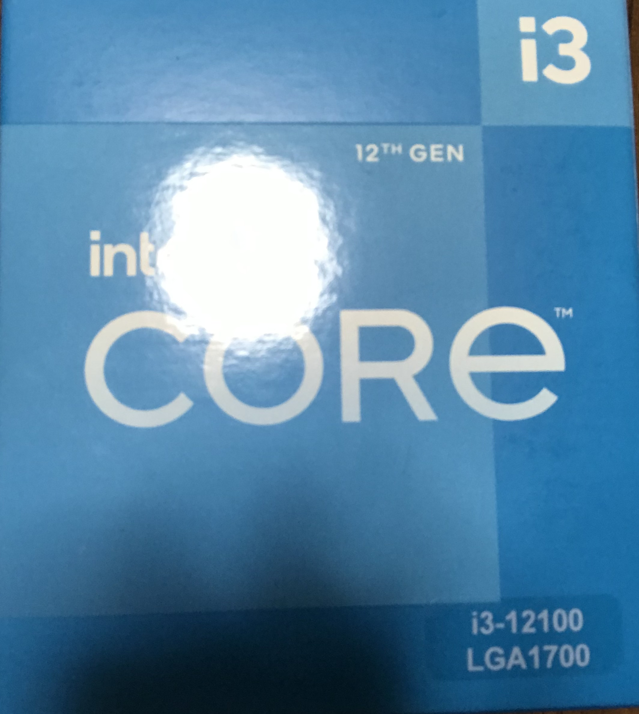
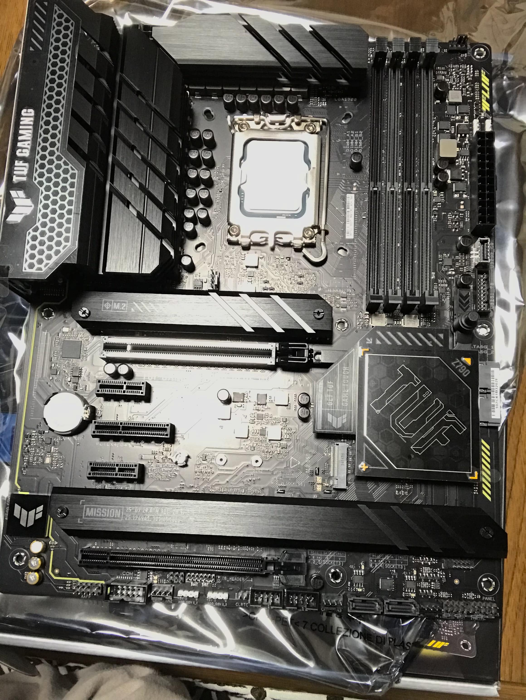

PC自作録 2.CPU・メモリ取り付け
core i3 12100 / crucial CP2K16G4DFRA32A
CPU買った
前回軽く書いておいたPCの計画にCPUは12700Kを使うと書いてあったな。あれは嘘だ。
というわけでCPUを購入。なお買ったものはi7 12700Kではなくi3 12100。
これはなぜかといえばそもそもi7だとオーバースペックだし高いし・・・と言った理由からである。
まあ12世代のi3もi3のくせに4コア8スレッドあるんだけどね
Amazonにて購入時の価格は18780円。ちょっと値上がりしたのか？ただ一万円台なのでコスパが良いことに変わりはなさそう。

(なおi7についても余裕があれば試してみようと思う。暫くは無いと思うが)
早速取り付け
取付工程の写真は撮ってない。別に反省はしていない
Intelはソケット側に細かいピンが大量(1700本)にあるのでピン折れが怖い。
慎重に取り付けてやったぜ。

ちなみにマザーボードを開封して直に眺めるのはこれが初めてである。ゴツい。鈍器
そしたら付属しているリテールCPUクーラーを取り付けて完了（当然写真なんか撮ってない）
巷ではソケットのレバーが固いとかいろいろ言われてるけど思ったほどではなかった。
どちらかといえばクーラーを差し込むときに固かったくらいか？